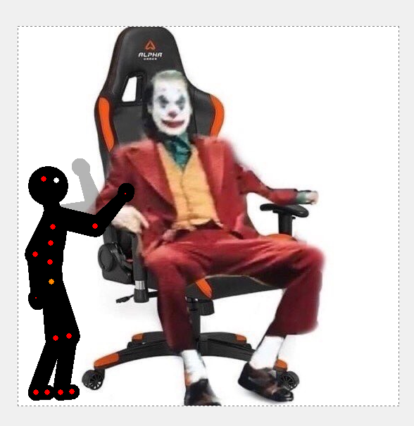

Art 321 Evan Argenal - Assignment 4 Solution
My Animation

What is this?
My animation was made using Pivot Stick Figure Animator 4.
I wanted to highlight complex interaction between elements which I did by making the elephant interact with the stick figures.
Some of the biggest challenges I faced while making this animation was making the walking animation of the stick figures and the elephant
appear natural, and making sure that each frame had multiple objects moving when there was more than 2 objects on the screen.
By having each object on the screen move at the same time, it adds more realism and makes the animation appear "smoother"
Another issue I faced was exporting my animation as a gif. My animation is 15+ seconds long. It takes an absurd amount of storage space to make
a gif that long, so I had to downscale the quality a bit by adding some noise so I could fit my entire animation into one gif.
The resulting gif has fairly good quality, and the noise isn't too obvious, which I am happy with.
Something worth mentioning is my animation runs at 15FPS (frames per second) which I found to be the sweet spot between complexity and smoothness.
Sources
Background Image and Sample Animation Frames
Here is the background image I used:
Here are some sample animation frames of when I was animating it in Pivot Animator 4:
